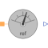

ReferenceSensorSensor of reference angle gamma |

|
Information
This information is part of the Modelica Standard Library maintained by the Modelica Association.
This sensor determines the reference angle of the connected quasi static magnetic system. The integral of the angular frequency of the quasi static magnetic system is equal to the reference angle.
Connectors (2)
| port |
Type: PositiveMagneticPort Description: Quasi-static magnetic port |
|
|---|---|---|
| y |
Type: RealOutput Description: Reference angle |
Used in Examples (1)
|
Modelica.Magnetic.QuasiStatic.FluxTubes.Examples.Leakage
Testing cylinder leakage models |